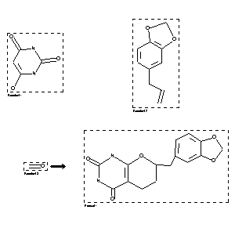

|  |
| FA | RX(1); FLST(1); RX(1) |
Reaction (1 of 1)
| Reaction ID | 958728 |
| Reactant BRN | 879051; 136380; 1209228 |
| Reactant | pyrimidine-2,4,6-trione; 5-allyl-benzo[1,3]dioxole; formaldehyde |
| Product BRN | 1030178 |
| Product | 7-benzo[1,3]dioxol-5-ylmethyl-1,5,6,7-tetrahydro-pyrano[2,3-d]pyrimidine-2,4-dione |
| No. of Reaction Details | 1 |
Reaction Details (1 of 1)
| Reaction Classification | Preparation |
| Solvent | acetic acid |
| Citation Pointer | 104449; Journal; Schulte,K.E.; von Weissenborn,V.; ARPMAS; Arch.Pharm.(Weinheim Ger.); GE; 305; 1972; 354-359; |
Reference (1 of 1)
| Citation Number | 104449 |
| Document Type | Journal |
| Authors | Schulte,K.E.; von Weissenborn,V. |
| CODEN | ARPMAS |
| Journal Title | Arch.Pharm.(Weinheim Ger.) |
| Language Code | GE |
| (Series) Volume | 305 |
| Publication Year | 1972 |
| Page | 354-359 |